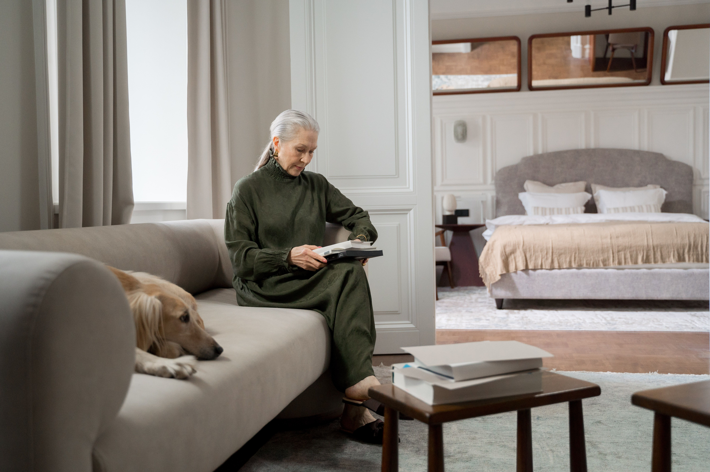

Technologia w służbie najbliższym
We make your future safe
RoboFriend to inteligentny Anioł Stróż, który po prostu jest i czuwa w tle, 24 godziny na dobę — nie odbierając Twoim bliskim godności i poczucia normalności.
11,8 mln
seniorów (65+) w Polsce do 2060 r. — niemal 40% populacji
22,0%
populacji UE to dziś osoby 65+, do 2100 r. — 32,5%
STATUS PROJEKTU
— najedź, aby dowiedzieć się więcejPragniemy poinformować, że RoboFriend jest obecnie w fazie budowy prototypu. Prezentowane grafiki przedstawiają tylko obraz koncepcji i mechanizm działania. Będziemy aktualizować stronę wraz ze zmianami w projekcie. Grafiki mogą być wygenerowane z użyciem AI.
Wyzwanie i rozwiązanie
O Projekcie
Każdego dnia miliony seniorów stawiają czoła cichemu wrogowi, który odbiera im radość i swobodę życia we własnym domu: strach przed upadkiem, nagłym pogorszeniem zdrowia, izolacją i samotnością.
Istniejące rozwiązania, takie jak opaski alarmowe, często zawodzą w kluczowych momentach — trzeba o nich pamiętać, ładować je, a w chwili kryzysu trafienie w mały przycisk bywa niemożliwe. Wielu seniorów po prostu nie chce ich nosić.
My wierzymy w inne podejście. Bezpieczeństwo nie powinno być kolejnym obowiązkiem.
Inwestycja w spokój
Dlatego stworzyliśmy RoboFriend — w pełni niezależnego, autonomicznego i inteligentnego Anioła Stróża, który po prostu jest i czuwa w tle, 24 godziny na dobę, nie odbierając seniorowi godności i poczucia normalności.
Zapewnienie bezpieczeństwa bliskim nie musi oznaczać ogromnych, comiesięcznych wydatków. Koszty dodatkowych leków i wizyt lekarskich często są konsekwencją późnej reakcji na zdarzenia w domu.
Już czas połączyć tradycyjne metody z nowoczesną technologią.

Technologia
W Robo Friends Tech wierzymy, że najlepsza technologia to taka, która jest niewidoczna dla użytkownika — intuicyjny, przyjazny towarzysz, w którego wnętrzu kryje się zaawansowany ekosystem czujników, procesorów i unikatowego oprogramowania.
Czujniki
Stałe, dyskretne wyczuwanie otoczenia bez konieczności noszenia urządzeń.
Autonomia
Samodzielne poruszanie się i czuwanie 24 godziny na dobę.
Oprogramowanie
Unikatowe algorytmy łączące dane z ekosystemu w spójny obraz sytuacji.
Dyskrecja
Towarzysz zaprojektowany tak, by nie przypominać o chorobie czy wieku.
Partnerzy
Zaawansowany hardware potrzebuje silnego, biznesowego serca. Naszym strategicznym partnerem jest Fundacja Gerio – organizacja, która rewolucjonizuje rynek usług opiekuńczych i rehabilitacyjnych w Polsce.
RoboFriend wchodzi do tego ekosystemu jako całodobowe wsparcie podopiecznego, integrując się z platformą Gerio. Razem tworzymy bezpieczną przyszłość Silver Economy.
Opieka Hybrydowa · System Weryfikacji · Ogólnopolska Sieć Placówek
Zespół
Strona zespołu jest w przygotowaniu.
Krystian Skrzypalik
CEO & Founder
+ kolejne osoby dołączą w miarę rozwoju projektu
Najczęściej zadawane pytania
RoboFriend to autonomiczny, mobilny robot domowy — inteligentny Anioł Stróż, który dyskretnie czuwa nad bezpieczeństwem seniora 24 godziny na dobę, bez konieczności noszenia dodatkowych urządzeń.
Pracujemy nad modelem, który będzie tańszy niż tradycyjne, comiesięczne formy opieki. Szczegółowy cennik ogłosimy bliżej premiery — zostaw e-mail w formularzu rezerwacji, aby dowiedzieć się pierwszym.
Nie. RoboFriend uzupełnia opiekę bliskich i profesjonalistów — daje poczucie, że pomoc jest blisko także wtedy, gdy rodzina nie może być na miejscu, integrując się przy tym z ekosystemem opieki naszego partnera Gerio.
Prywatność traktujemy priorytetowo już na etapie projektowania. Dane z naszej ankiety są w pełni anonimowe i analizowane wyłącznie zbiorczo — szczegóły znajdziesz w sekcji Ankieta poniżej.
Nie — to jedna z głównych przewag RoboFriend nad opaskami alarmowymi. Nie trzeba o nim pamiętać ani go ładować osobno — czuwa w tle, jako w pełni niezależne urządzenie.
RoboFriend jest obecnie w fazie budowy prototypu. Prezentowane grafiki to wizualizacje koncepcji — stronę aktualizujemy wraz z postępami prac.
Głosy rodzin
„Najbardziej boję się dnia, w którym coś się stanie mamie, a ja się o tym nie dowiem od razu. Robot czuwający w tle daje mi nadzieję na spokojniejsze noce."
„Nie chcę nosić opaski, bo czuję się przez nią chora. Coś, co po prostu jest w domu i nie trzeba o nim pamiętać, brzmi dla mnie dużo lepiej."
„Mieszkam za granicą i nie mogę być przy rodzicach codziennie. Coś takiego jak RoboFriend to dla mnie realne wsparcie, nie kolejny gadżet."
Ankieta
Tworzymy RoboFriend z myślą o realnych potrzebach seniorów i ich rodzin. Twoje doświadczenia, obawy i sugestie są dla nas bezcenne — poświęć kilka minut i pomóż nam zbudować rozwiązanie, które zmieni czyjeś życie na lepsze.
Wypełnij AnkietęInformacja RODO: Administratorem Twoich danych jest Robo Friends Tech P.S.A. Wszystkie odpowiedzi udzielone w tej ankiecie są w pełni anonimowe i będą wykorzystywane wyłącznie w celach statystycznych i badawczych, aby pomóc nam w udoskonaleniu naszego produktu. Analizujemy dane zbiorczo i nie identyfikujemy poszczególnych respondentów. Podanie adresu e-mail na końcu ankiety jest całkowicie dobrowolne i służy jedynie do informowania Cię o postępach w naszym projekcie, zgodnie z Twoją zgodą. W każdej chwili masz prawo do wycofania zgody i usunięcia swoich danych z naszej listy mailingowej.
Zarezerwuj RoboFriend
Chcesz być pierwszy? Zgłoś zainteresowanie RoboFriend — bądź na bieżąco z postępami prac i zdobądź pierwszeństwo w dostępie do prototypu.
Zarezerwuj Swojego RoboFriendKontakt
Krystian Skrzypalik
CEO & Founder
Mobile: +48 665 945 049